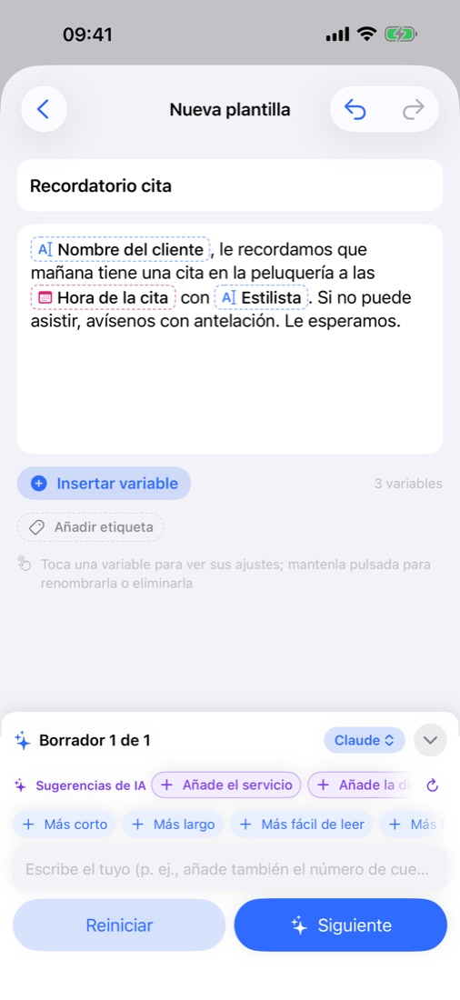
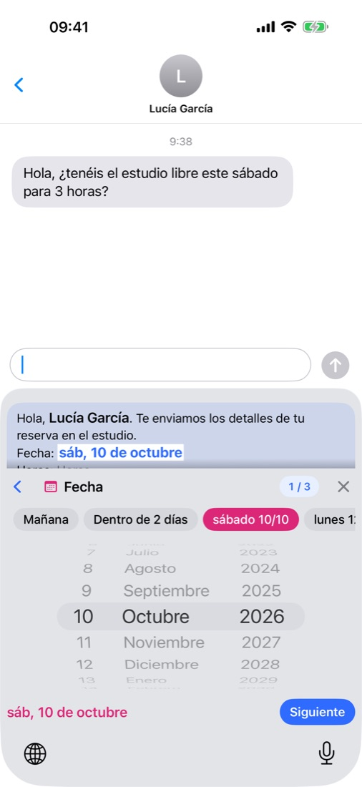
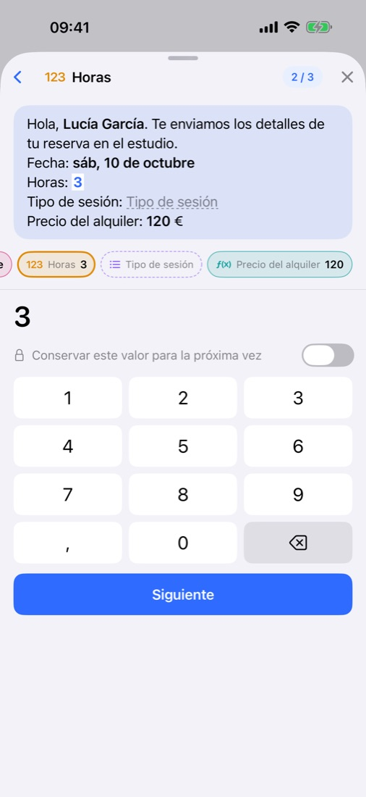
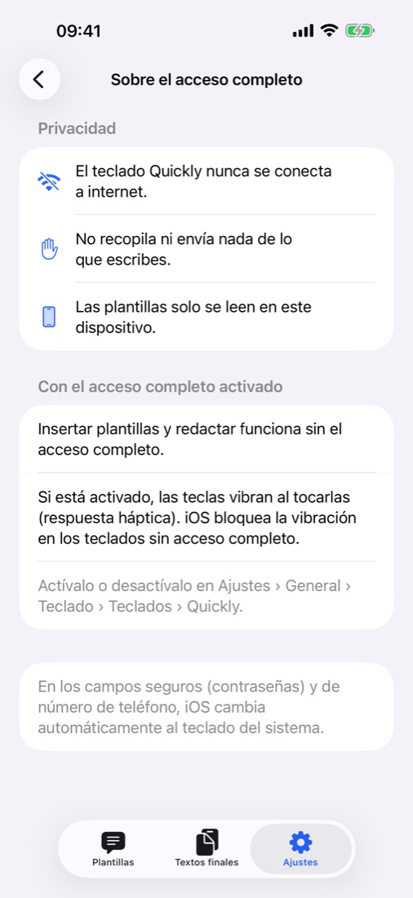

Los mensajes de siempre, para la IA.
Tú solo lo que cambia.
Escribe una línea y la IA redacta el mensaje, con huecos para lo que cambia cada vez: un nombre, una fecha, un importe. Al enviarlo, rellenas esos huecos desde el teclado Quickly, en cualquier app.
Muy pronto en el App StoreGratis · Sin anuncios · iOS 18 o posterior · iPhone · iPad

Escribe, rellena y envía.



Todo lo que necesitas, incluido.
Cuenta la situación en una línea o pega un mensaje que ya envías y te lo devuelve con las partes que cambian como variables. Pule el texto con «Más corto» o «Más formal».
Apple Intelligence en tu dispositivo y gratis, la app de ChatGPT, Claude o Gemini que ya usas, o tu propia clave de API. O escríbelo tú, sin IA.
En Mensajes, el correo o tu app de chat, elige una plantilla y rellena los valores. Y escribe con normalidad en 11 idiomas.
Mañana o este sábado con un toque, importes con el símbolo de la divisa ya puesto y fórmulas que calculan el total por ti.
Cada mensaje que rellenas se guarda en «Textos finales» para volver a usarlo. Ordena con etiquetas y busca por título o contenido.
Plantillas, etiquetas y textos finales se sincronizan entre tus dispositivos con la misma cuenta de iCloud. Exporta una copia de seguridad cuando quieras. Modo claro y oscuro.
Se guardan solo en tu dispositivo y en tu propio iCloud, donde ni el desarrollador puede verlos. Sin registro, sin anuncios, sin rastreo, y el teclado nunca se conecta a internet — Privacidad